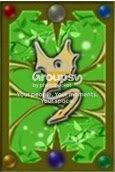
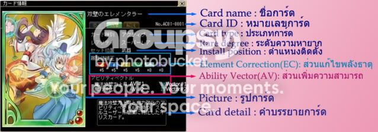
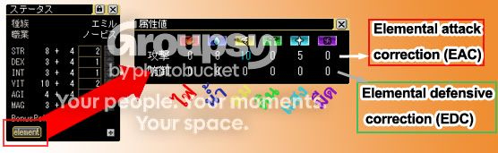
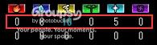
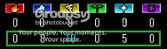

II: Effect of Iris card
- พื้นฐานของ Iris card
หน้าตาของมันเป็นแบบนี้

ซึ่งวิธีที่จะได้มันมานั้นมีอยู่หลากหลายได้แก่ ตกจากมอนสเตอร์, ซื้อจาก NPC, และซื้อจาก
แคช
การเจาะรู สร้าง ประกอบและใช้งานนั้นเป็นอะไรที่ซับซ้อน ซึ่งเราจะกล่าวถึงพร้อมๆกับเควสเริ่มต้นในส่วน III.
ดังนั้นตอนนี้เรามาพูดถึงความสามารถหลักๆของมันก่อนดีกว่า
มี 4 ชุดคำที่ควร(ต้อง)รู้เกี่ยวกับระบบการทำงานของ
Iris card ซึ่งศัพท์จะใกล้ๆกันและอาจทำให้งงได้ เวลาดูระวังๆนะครับ
4 คำที่ว่ามีดังนี้
1.
ผลที่การ์ดกระทำต่อผู้ใช้ มีสองกลุ่มคือ
กลุ่มเพิ่มความสามารถ (Ability Vector: AV) /
กลุ่มแก้ไขพลังธาตุ (Element Correction: EC)
2.
ค่าเลขพลังของการ์ด มีสองกลุ่มซึ่งบอกแต่ละกลุ่มในข้อ 1. ได้แก่
ค่าเวกเตอร์ (Vector) /
ค่าแก้ไขพลังธาตุ (Element Value Correction: EVC)
3.
ความสามารถที่การ์ดแสดงออกมา เรียกว่า
ผลปลดปล่อยความความสามารถ (Release Ability: RA) ส่งผลมาจาก AV ในข้อ 1. (ของธาตุไม่มีส่วนนี้)
4.
ระดับค่าพลังของการ์ด มีสองอย่างเช่นกัน แจกแจงตามข้อ 1.
ได้แก่ระดับการปลดปล่อย (Releasibility Level: RLv) /
ระดับพลังธาตุ (Elemental Level: ELv)
- Iris card ทำอะไรได้บ้าง?
เมื่อเราได้
Iris card ที่พร้อมใช้งานแล้วใบหนึ่งมา เมื่อคลิกดูข้อมูลไอเท็มในช่อง "ต่อสู้" จะพบหน้าตาเป็นแบบนี้ครับ

เอารูปจากยุ่นแก้ขัดไปก่อนเนอะ
เราจะมาอธิบายถึงรายละเอียดของการ์ดกับทีละส่วน ไ่ล่จากสำัคัญมากไปน้อยละกัน
_________=====================================================================
การทำงานของการ์ด
การ์ดแต่ละใบจะมีส่วนที่การ์ดกระทำต่อผู้ใช้สองกลุ่มอย่างที่กล่าวไปแล้ว โดยส่วนบนเป็น
กลุ่มแก้ไขพลังธาตุ (Element Correction: EC)
และส่วนล่างนั้นคือ
กลุ่มเพิ่มความสามารถ (Ability Vector: AV)
กลุ่มแก้ไขพลังธาตุ (Element Correction: EC)
กลุ่มค่า
EC นั้นจะส่งผลกระทบต่อเราทั้งเรื่อง
Attack(เพิ่มผลการโจมตี) และ
Defense(ป้องกันการโจมตี)
ซึ่งจะขึ้นกับว่าเรานำการ์ดใบนี้ไปยัดไว้ในส่วนใด ถ้าเป็น "อาวุธ" มันจะเข้าไปเป็น
Attack แต่ถ้าใส่ "เครื่องป้องกัน/acc" มันจะไปเป็น
Defense ให้กับเรา
และแน่นอนว่าเมื่อใส่การ์ดครบทั้งสามส่วนพวกมันก็จะส่งผลให้เราทั้งป้องกันและโจมตีไปพร้อมกัันนั่นเอง
#[สำคัญ!] ทั้ง
การโจมตี (Attack) และ
ป้องกัน (Defense) แบบมีธาตุนั้น แต่เดิมมีเพียงไม่กี่อาชีพเท่านั้นที่ได้สัมผัสและมักไม่มีผลรุนแรงจนต้องพิจารณาเป็นเรื่องสำคัญ
แ่ต่ใน
Extra update: Iris นี้ ระบบธาตุมีการ
ปรับปรุงขนานใหญ่ (หัวข้อ IV) ซึ่งเมื่อผนวกรวมกัน
Iris card ไปแล้ว
"ทุกอาชีพ" จะได้สัมผัสกับระบบธาตุอย่างหลีกเลี่ยงไม่ได้
ซึ่งเราจะมาดูกันต่อไปครับ
- ตรวจสอบค่าธาตุประจำตัวละคร?
เริ่มจากการเปิด window status สำหรับตั้งแต่ Iris update เป็นต้นไปมันจะมีช่อง
element เพิ่มมาให้
ซึ่งมันจะบอกว่าเราได้ผลอะไรจาก
Iris card ที่ใส่ไปแล้วบ้าง

จาก รูปจะเห็นว่าในส่วนของการปรับธาตุ นั้นจะบอกตัวเลขให้กับธาตุต่างๆเอาไ้ว้ พวกมันทำอะไรได้? และส่งผลยังไง? จะกล่าวต่อไปครับ
บรรทัดบนนั้นเป็น
ค่าแก้ไขพลังธาตุด้านการโจมตี (Elemental attack correction: EAC)
ส่วนบรรทัดล่างเป็นค่าการ
แก้ไขพลังธาตุด้านการป้องกัน (Elemental defensive correction: EDC) ซึ่งสองอย่างนี้จะแตกต่างกันพอดู
ค่าการแก้ไขพลังธาตุด้านการโจมตี (Elemental attack correction: EAC)
ในส่วนของบรรทัดบนนั้น ผลของมันคือเข้าไป
เสริม พลังธาตุให้ักับการโจมตีของตัวละคร
ตัวอย่าง ดูจากตารางตัวอย่างด้านล่าง จะพบว่า...

- ค่าของผลบวกพลังธาตุสามารถมีได้มากกว่า 1 ค่า แต่ตัวระบบจะทำการ
เลือก ค่าที่
สูงที่สุดเ่ท่านั้นเป็น
"ค่าแก้ไขพลังธาตุด้านการโจมตี (Elemental attack correction: EAC)" ให้กับตัวละคร
# กรณีที่ค่าผลบวกพลังธาตุแบบในตารางมีค่าสูงสุดมากกว่า 1 ค่า ทางระบบจะ
เลือก ตัวที่อยู่ทาง
ซ้ายสุด เป็น
EAC
-
EAC ประจำตัวละครจะส่งผลไปยังสองสิ่ง
=== 1. สกิลการโจมตี
กายภาพทุกประเภท จะมีธาตุอันขึ้นอยู่กับ
EAC และตัวเลขของธาตุนั้นจะเรียกว่า
ค่าแก้ไขพลังธาตุด้านการโจมตี (Element Value Correction(Attack): atkEVC) ซึ่งจะนำไปคำนวณความเสียหายในระบบธาตุต่อไป
=== 2. สกิลเวทมนตร์ที่
มี ธาตุตรงกับ
EAC จะได้รับผลโดยเพิ่มเลขค่า
แก้ไขพลังธาุตุ(EVC) เข้าไป ไม่ว่าสกิลนั้นจะเป็นธาตุเดียวหรือหลายธาตุ ขอให้มีธาตุที่ตรงกับ
EAC อยู่เป็นใช้ได้
# ดังนั้นจะพบว่าเหลืออยู่สิ่งนึงที่ EAC ไม่มีผล นั่นก็คือ "เวทมนตร์ไม่มีธาตุ" ซึ่งส่วนใหญ่เป็นสกิลของสายวิซาร์ด (และมีเพิ่มเติมอีกหลายสกิล จะแจ้งภายหลัง) สกิลเหล่านี้จะไม่ได้รับผลจากค่าแก้ไขพลังธาตุแต่อย่างใด
=== 3.
ค่าแก้ไขพลังธาตุด้านการโจมตี(atkEVC) นั้นจะส่งผลไปถึง ระดับพลังธาตุด้านการโจมตี หรือ
Elemental Level(attack): atkELv ซึ่งส่งผลให้การโจมตีใส่สิ่งที่มีธาตุต่างๆได้ผลไม่เหมือนกัน (การคำนวณอยู่ใน part IV)
ค่าการแก้ไขพลังธาตุด้านการป้องกัน (Elemental defensive correction: EDC)
ในส่วนของบรรทัดล่างนั้น ผลของการ์ดจะไปทำให้ตัวละครมี
ธาตุของตัวเอง อย่างหลีกเลี่ยงไม่ได้
โดยที่เมื่อดูจากตารางด้านล่าง จะพบว่า...

- ค่าของผลบวกพลังธาตุสามารถมีได้มากกว่า 1 ค่า แต่ตัวระบบจะทำการ
เลือก ค่าที่สูงที่สุดเ่ท่านั้นเป็น
"ค่าแก้ไขพลังธาตุด้านการป้องกัน (Elemental defensive correction: EDC)" ให้กับตัวละคร
# กรณีที่ค่าผลบวกพลังธาตุแบบในตารางมีค่าสูงสุดมากกว่า 1 ค่าพร้อมกัน ทางระบบจะ
เลือก ตัวที่อยู่ทาง
ซ้ายสุด เป็น
EDC
-
EDC มีผลโดยตรงต่อตัวละครดังนี้
=== 1. ตัวละครตัวนั้นจะมีธาตุของตัวเองทันที (เหมือนการใส่เกราะธาตุ) โดยความแรงของธาตุตัวเองจะขึ้นอยู่กับตัวเลขของธาตุที่เป็น
EDC ของเรา เรียกว่า
ค่าแก้ไขพลังธาตุด้านการป้องกัน (Element Value Correction(defense): defEVC) ซึ่งจะนำไปคำนวณความเสียหายในระบบธาตุต่อไป
=== 2. สกิลใส่เกราะธาตุของอาชีพสายชาแมน จะส่งผลแยกต่างหากกับ
defEVC เช่นถ้าบัฟธาตุเดียวกันให้ ผลของการป้องกันธาตุนั้นจะแรงขึ้น แต่ถ้าบัฟธาตุที่แตกต่างกันให้ ตัวละครนั้นก็จะได้การป้องกันธาตุมากกว่า 1 ชนิด
=== 3.
ตัวเลขค่าแก้ไขพลังธาตุด้านการป้องกัน (defEVC) จะส่งผลไปถึง
ระดับพลังธาตุด้านป้องกัน หรือ Elemental Level(defense): defELv ซึ่งส่งผลต่อการรับความเสียหายอย่างชัดเจน (การคำนวณอยู่ใน part IV)
สรุป! สำหรับ
ผลของการแก้ไขพลังธาตุ (EC) นั้น
ด้านการโจมตี จะส่งผลถึงอาชีพที่้ใช้สกิลทุกชนิดไม่ว่าจะกายภาพหรือเวทมนตร์ธาตุ "ยกเว้น" เวทมนตร์ไร้ธาตุเท่านั้น
ส่วน
ด้านการป้องกัน จะส่งผลถึงทุกอาชีพที่มีเลข
defEVC จากการ์ดติดตัวไม่มากก็น้อย โดยขึ้นกับระดับ
defELv ว่าผลจะรุนแรงขนาดไหน
ขอจบในส่วน
EC ไว้เพียงเท่านี้ ทั้งหมดที่กล่าวไปเป็นเพียงครึ่งเดียวของระบบธาตุที่ถูำกแก้ไขครั้งใหม่ ซึ่งผมกล่าวเฉพาะส่วนที่เกี่ยวกับ
Iris card ไปก่อน
ระบบคำนวณธาตุ (Element system) ที่แท้จริงนั้นอยู่ใน IV: New elemental system ครับ
กลุ่มเพิ่มความสามารถ (Ability Vector: AV)
ส่วนของ
AV จะยุ่งยากและซับซ้อนกว่ากลุ่ม
EC และน่าดูกว่าด้วย<<ไม่ใช่เฟ้ย

จาก รูป (ดึงมาให้ใหม่) จะเห็นว่าการ์ดนั้นจะมี "ชื่อ"(ที่เขียนว่า AV#1,2) ของกลุ่มอยู่ โดยที่การ์ดส่วนใหญ่มักจะอยู่กลุ่มเดียว แต่ก็มีการ์ดบางจำพวกที่อยู่ได้มากกว่า 1 กลุ่ม
หรือพูดง่ายๆคือ
Iris card บางใบสามารถมี
AV ได้หลายชุดแถมมีค่า
แก้ไขธาตุ(EC) อยู่ด้วยอีกต่างหาก
ด้านขวาของ
Ability Vector จะมีตัวเลขบอกเอาไว้ ตัวเลขนี้เรียกว่า
ค่าเวกเตอร์ (Vector) ซึ่งมีตั้งแต่ไม่ถึง 10 จนเป็นร้อย(น้อยมาก)
ค่าที่สำคัญทั้งสองนี้บอกอะไรเราบ้าง?
1.
Ability Vector(AV) นั้นจะบอกว่าการ์ดใบนี้ "ส่งผลถึง" อะไร กลุ่ม
AV ของการ์ดนั้นมีอยู่มากกว่า 40 กลุ่ม ซึ่งแต่ละกลุ่มก็ส่งผลถึงค่าต่างๆแตกต่างกันไป
เช่นบางกลุ่มส่งผลถึงค่าโจมตีกายภาพ บางกลุ่มเป็นสายปรับการโจมตีเวทย์ บางกลุ่มเป็น status ฯลฯ
โดยค่าที่มีการปรับเหล่านั้นจะเรียกว่า
ผลปลดปล่อยความความสามารถ (Release Ability: RA)
2.
ค่าเวกเตอร์ (Vector) ประจำกลุ่ม
AV หนึ่งๆที่เราได้จะเป็นตัวชี้วัดว่ากลุ่ม
AV นั้นจะให้ status เรามากน้อยเพียงใด โดยค่าเวกเตอร์จะก่อให้เกิด
ระดับการปลดปล่อย (Releasibility Level: RLv) ซึ่งแต่ละ
RLv จะให้ค่า
RA ต่างกันไปดังแสดงในตารางข้างล่างนี้
3. ไม่ว่าเราจะใส่การ์ดไว้ที่ส่วนใด หากการ์ดเหล่านั้นมี
Ability Vector(AV) เป็นกลุ่มเดียวกัน ค่า
Vector จะ
รวมกัน เสมอและทำให้
ผลปลดปล่อยความความสามารถ (Release Ability: RA) หรือตัว
RLv ยกระดับขึ้นตามไปด้วยนั่นเอง
4. ถ้าการ์ดทั้งหมดที่ใส่ในตัวละครหนึ่งๆมี
Ability Vector(AV) หลากหลายประเภท พวกมันก็จะส่งผลให้
ผลปลดปล่อยความความสามารถ (Release Ability: RA) แสดงออกมาหลากหลายเช่นกัน
5. กรณีที่ค่าบางค่าใน
Release Ability(RA) เช่น
+HP มีการแสดงผลซ้ำกันหลายทีเนื่องจากมีกลุ่ม
AV หลายกลุ่มทำงานพร้อมกัน ระบบจะทำการ
"เลือก" ค่าที่สูงที่สุดเท่านั้น
"จะไม่นำ" ค่าเหล่านั้นมาบวกกัน
EX เขียน:ตัวอย่าง (ค่อยๆทำความเข้าใจครับ มันยุ่งน่าดู)
สมมุติว่าตัวละครหนึ่งใส่การ์ดเข้าไปหลายใบ(ไม่แจกแจง) ผลรวมของการ์ดทั้งหมดที่ใส่เข้าไปมีดังนี้
Ability Vector(AV) และค่า Vector รวมทั้งหมดของแต่ละกลุ่ม AV เป็นดังนี้
Ability Vector กลุ่ม A มีค่า Vector เป็น 56 จากตารางเราได้ RLv = 2
Ability Vector กลุ่ม B มีค่า Vector เป็น 500 จากตารางเราได้ RLv = 6
Ability Vector กลุ่ม C มีค่า Vector เป็น 12 จากตารางเราได้ RLv = 1
Ability Vector กลุ่ม D มีค่า Vector เป็น 177 จากตารางเราได้ RLv = 4
เมื่อไปเิปิดตารางจะพบว่า Release Ability(RA) ของแต่ละกลุ่มในระดับ RLv ที่ได้เ็ป็นแบบนี้
AV กลุ่ม A ได้ RA คือ +50 Max HP , +5% อัตราฟื้นฟู HP
AV กลุ่ม B ได้ RA คือ +1000 Max HP , +10% อัตราฟื้นฟู HP , +500 Max MP , +10% อัตราฟื้นฟู MP , +8%Critical , ลดพลังโจมตีกายภาพ 8%
AV กลุ่ม C ได้ RA คือ +30 Max SP
AV กลุ่ม D ได้ RA คือ +10% พลังป้องกันเกราะ , +6 left DEF
เมื่อดูค่า RA แยกตามกลุ่ม AV จะมีบางค่าที่เพิ่มเหมือนกันได้แ่ก่ +Max HP และ +%อัตราฟื้นฟู HP
และระบบจะเลือกเฉพาะอันที่ "สูงที่สุด" ดังที่กล่าวไปแล้ว
โดยสรุป ตัวละครนี้ได้ status จาก การเพิ่มความสามารถเป็นดังนี้ :
+1000 Max HP , +10% อัตราฟื้นฟู HP , +500 Max MP , +10% อัตราฟื้นฟู MP , +8%Critical , ลดพลังโจมตีกายภาพ 8% , +30 Max SP , +10% พลังป้องกันเกราะ , +6 left DEF
ค่าเหล่านี้ดึงมาจากตารางจริงไม่มีโมเม จะเห็นว่ากลุ่ม AV ของ Iris card นั้นส่งผลอย่างมหาศาลขึ้นอยู่กับชนิดการ์ดและการจัดการการ์ดที่สวมใส่
และจะเห็นว่า AV กลุ่ม A ซึ่งค่าโดนกลุ่ม B ทับหมดนั้นไม่มีประโยชน์เสียเลย เพลเยอร์คนนี้ควรหาการ์ดที่เพิ่มค่าอื่นมาใส่แทนจะดีกว่า~
_________=====================================================================
ยัง! มันยังไ่ม่จบ

แต่วันนี้ผมไม่ไหวแล่ว ไปสลบก่อนล่ะนะ รายละเอียดส่วนท้ายของ part นี้ไว้จะทำต่อ จากนั้นก็ part III เรื่องเควสและการสร้างการ์ดครับ


 Weapon Create ,
Weapon Create ,  Bow Create ,
Bow Create ,  Staff Create ,
Staff Create ,  Machine Create]
Machine Create] Protection Create]
Protection Create]


 Item Refine
Item Refine


 อันนี้คือ
อันนี้คือ 
 น่าสนใจมาก
น่าสนใจมาก